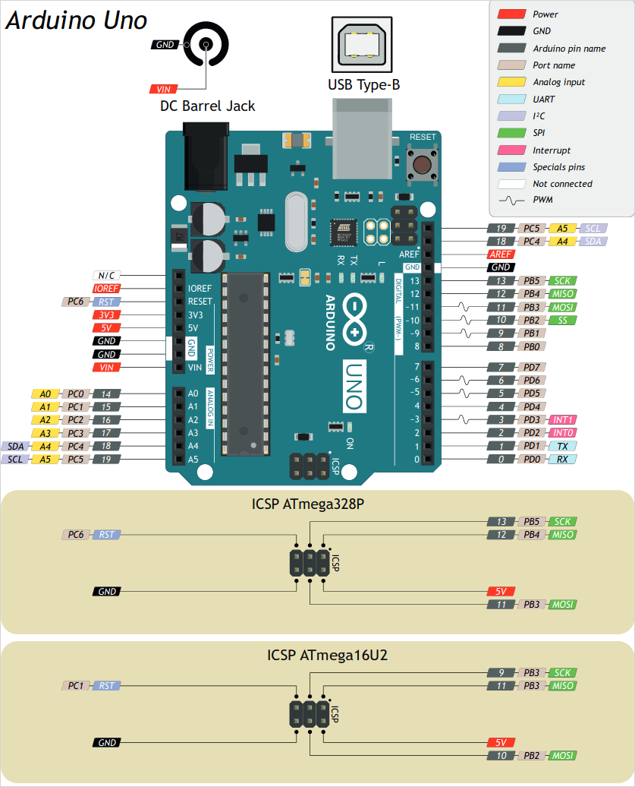

На картинке представлена распиновка платы Arduino UNO R3. От первых версий Arduino UNO она отличается наличием двух дублирующих контактов PC4 и PC5 рядом (выше) контакта AREF. А так же наличием второго распаянного 6-ти пинового разъема ICSP в верхней части платы. Кроме того, кнопка Reset переместилась к USB-разъему.
